前言
這篇文章前前後後拖了快一個月才生出來，主要是想要紀錄自己是怎麼把這個網站架設出來的。這個網站會紀錄平常工作中或生活中學的的一些東西，日記以及一些程式心得分享。
這篇文章是參考了很多網站上的大神們的文章才寫出來的，因為對於網站架設完全是第一次嘗試，如果有錯誤的地方還請各位不吝指教。
Hexo是什麼
Hexo 是基於 Node.js 開發的套件，它可以將 Markdown 轉成 HTML，而且提供了豐富的工具。
這是在搜尋時找到解釋Hexo的一段話，因為筆者對於Node.js與Hexo完全是初學，所以就引用過來解釋，感謝友站提供引用
架設Hexo步驟
- 安裝NPM
- 到Node官網下載NVM安裝NPM
- 安裝Git
- 到Git官站下載
- 安裝Hexo
- 用CMD的指令安裝
- 設定Hexo
- 更換主題與設定檔
- 將Hexo發佈到Github
- 利用CMD發佈到GitHub
安裝NPM
使用Hexo架設網站必須要先安裝NPM到電腦環境中，因為Hexo是基於Node.js的開發的套件，所以想要使用Hexo的指令需要使用到NPM的協助。
而NPM是什麼呢?
它全名是「Node Package Manager」，可以理解為一個線上套件庫，用來從線上下載各式各樣的 Javascript 套件。
NPM可以透過NVM(Node Version Manager)來安裝，NVM是服務給 Node.js用的工具，所以我們可以利用它來安裝 Node.js 跟 NPM，但這邊我們只需要安裝NPM即可。
首先，到Node的官網下載安裝包。
Node官網
接著，啟動安裝包，這邊我們只需要安裝npm package manager。
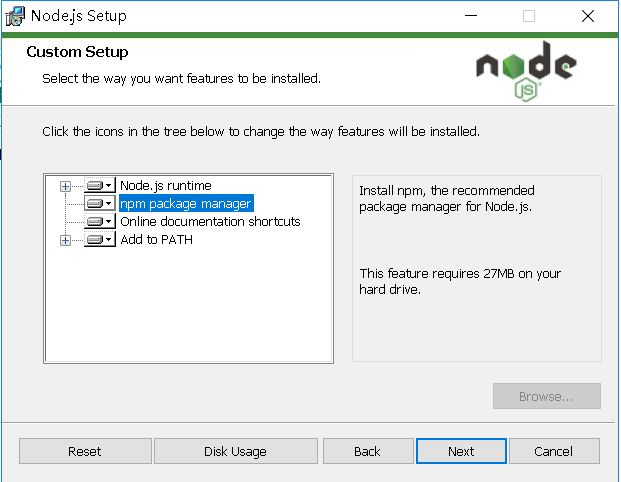
最後，安裝完成後啟動CMD，輸入以下指令碼，有成功出現版號NPM就安裝成功了~
1 | npm -v |
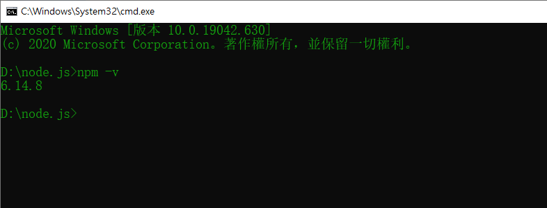
另外再搜尋時也找到一個新的package管理器Yarn，但筆者沒有深加研究就不贅述。
安裝Git
接下來要安裝Git到電腦環境，安裝Git是為了能夠在Github上架設網站的伺服器，這個步驟很簡單只需要到Git官網下載Git安裝包
Git官網
安裝時一路按Next下去，除非有想要特別設定，一般來說使用預設即可。
安裝Hexo
這步驟要利用CMD的指令安裝，輸入以下指令，路徑用預設的:C:\Users\XXX就行了。
1 | npm install hexo-cli -g |
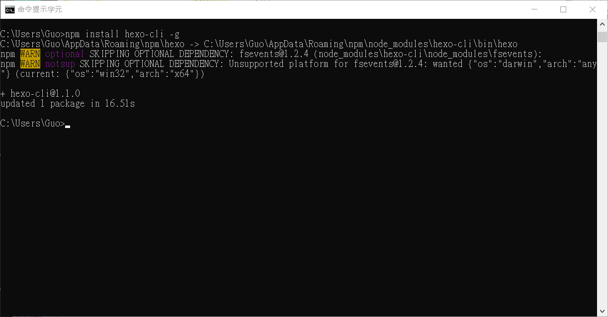
接下來會開始自動安裝hexo，完成後輸入hexo v指令確認使否安裝成功，有出現版本號就完成安裝了。
1 | hexo v |
完成之後可以使用hexo init來建置用來存放部落格原始資料的目錄。
1 | hexo init XXXX |
上面的”XXXX”是要想要的資料夾名稱，可以隨意取，筆者是以blog.xxx.xxx的方式命名。
成功後會在路徑下出現對應名稱的資料夾。
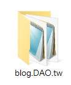
接下來要進入剛剛建立好的blog目錄底下，並輸入npm install來進行載入套件。
1 | npm install |
接著，可以使用hexo server或hexo s來啟動 LocalHost 的 Server ，預設會在 localhost:4000 的位置。
(localhost 代表的是只能從本地瀏覽此網站，無法從外部瀏覽)
1 | hexo server |
輸入http://localhost:4000到瀏覽器，有出現下圖就代表網站在本地設置成功啦。
1 | http://localhost:4000 |
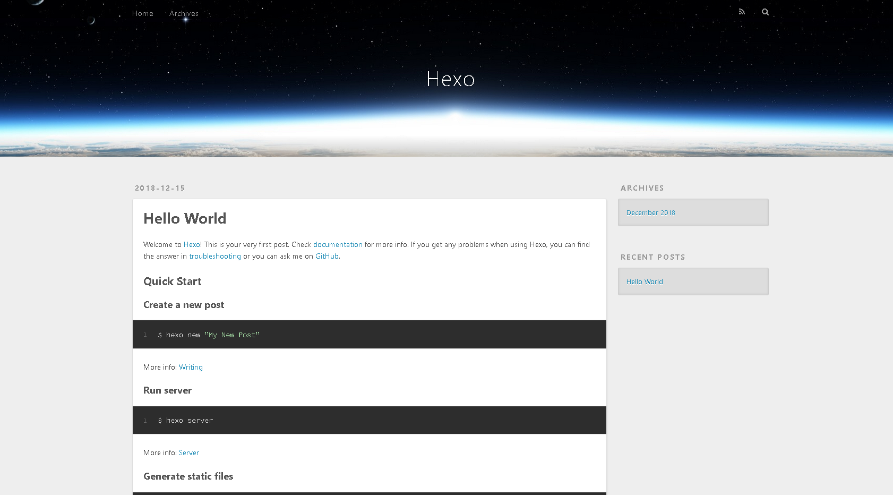
設定Hexo
在開始設定Hexo之前先讓我們了解一下資料夾的目錄結構
1 | _config.yml -> 最主要的設定檔 |
接下來我們主要會在config.yml與themes資料夾進行更動。
網站設定
_config.yml，可設定：
- 作者名字、標題、描述
- 語系設定
- 是否產生assets資料夾
- 套用主題
主題設定
themes/theme-name/_config.yml，可設定：
- 頭像
- 社群網路連結
- 新增頁面
- 其他客製化選項(scheme、高亮、動畫等等)
更換主題
Hexo的預設主題是landscape，我覺得不是很和我胃口(畢竟是預設)，推薦一款在網路上很多人都在使用的主題:
NexT
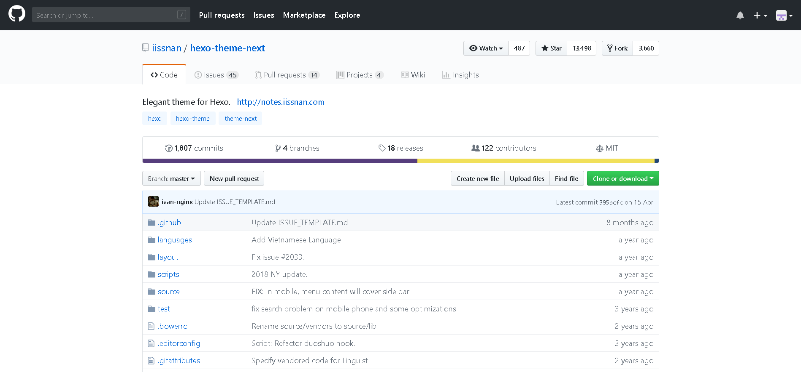
可以選擇用Git安裝或是直接從網站下載下來，筆者是直接從網站下載的。
另外，如果想要看看其他主題可以到這個網站看看。
下載後解壓縮，把文件放到themes資料夾中，並改名為Next。
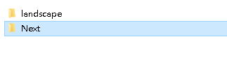
接著修改網站設定_config.yml，在裡面找到theme，把後面得主題名稱修改成Next。
(筆者是使用Atom開，當然使用記事本也是可以開的)
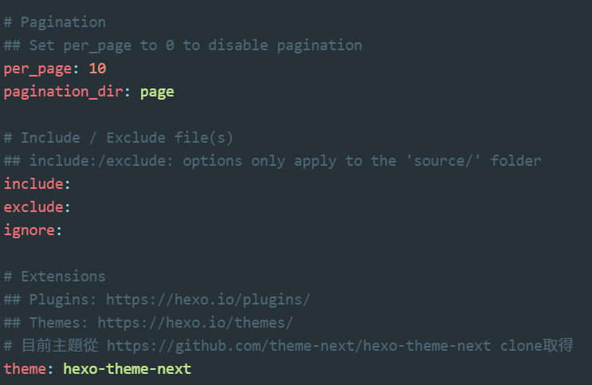
使用hexo s，重新啟動server，就可以看到修改過後的主題了！
語言設定
在_config.yml中找到language欄位，設定為zh-tw就會支援繁中。
1 | language: zh-tw |
Scheme外觀設定
NexT提供多種Scheme選擇，其中Muse是預設的主題。筆者滿喜歡Mist這個主題
在主題設定theme/next/_config.yml裡找到scheme設定，把注釋去掉即可開啟。
1 | #scheme: Muse |
代碼高亮
官方說明
NexT 使用 Tomorrow Theme 作为代码高亮，共有5款主题供你选择。 NexT 默认使用的是 白色的 normal 主题，可选的值有 normal，night， night blue， night bright， night eighties
1 | highlight_theme: normal |
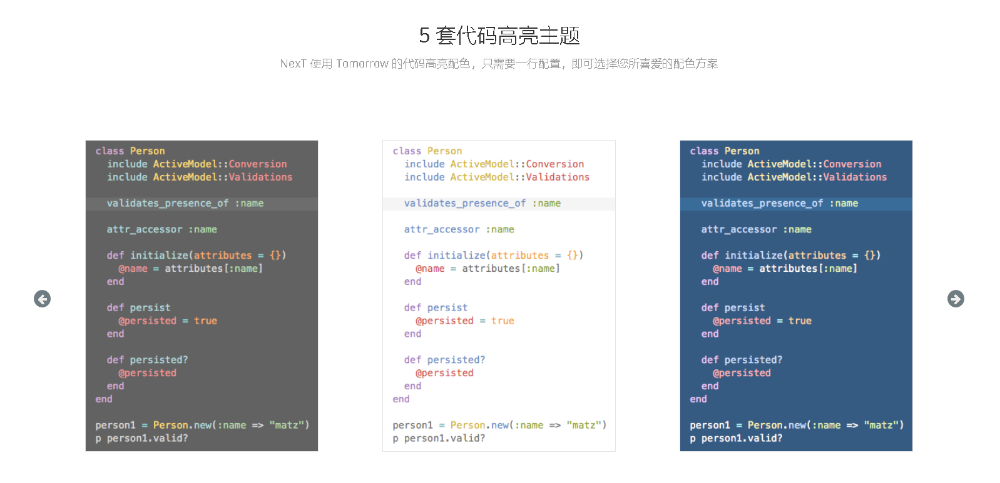
背景動畫效果
在主題設定themes/next/_config.yml裡選擇要開啟的動畫效果，要打開就把值設定成true
1 | # Canvas-nest |
關於作者
接下來開始設定關於自己的資訊吧！
頭像
先在sourse裡新增一個uploads資料夾，用來存放大頭照。
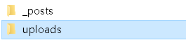
把自己的大頭照丟進source/uploads/這個資料夾裡，然後在主題設定themes/next/_config.yml中設定大頭照路徑:
1 | avatar: /uploads/avatar.jpg |
作者
在網站設定_config.yml中設定名字、標題和副標題
1 | title: <標題> |
開啟社群帳號連結
在主題設定themes/next/_config.yml中新增社群網路連結，記得要把#social:跟想要開啟的社群連結前面的#刪除。
1 | # Social links |
About Me Page
輸入以下指令，新建一個about頁面。
1 | hexo new page "about" |
在themes/next/_config.yml將about前面的註解去掉。
1 | menu: |
編輯source/about/index.md
1 | --- |
成品:
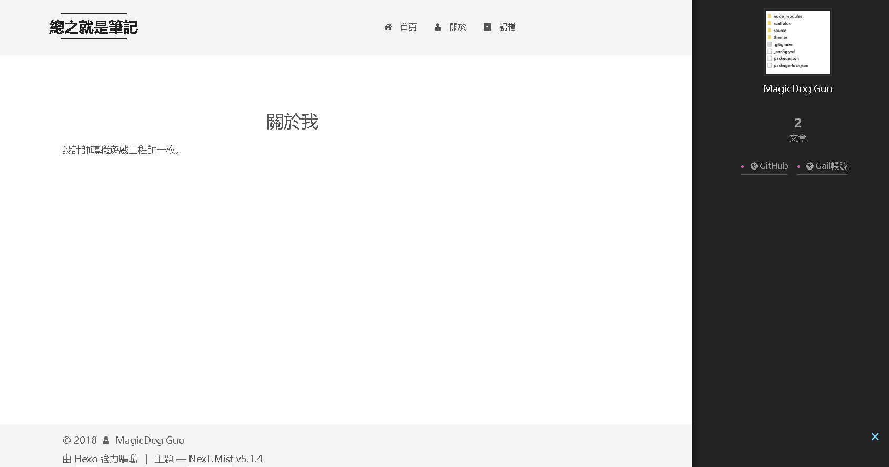
第一篇文章
終於要發表第一篇文章了！
設定
所有的文章都會在source/_posts裡。其實一開始裡面就已經有一篇範例文章hello-world.md了。
在發表文章以前，先進行一個簡單的設定，在網站設定_config.yml中:
1 | post_asset_folder: true |
這樣每當新增一篇文章時，會自動在source/_posts/裡新增一個跟文章同名的資料夾用來放置圖片資源。
新增文章
創造一篇名叫”測試”的文章
1 | hexo new post 測試 |
編輯source/_posts/test.md
1 | --- |
Tags分類
文章可以透過標籤來進行分類
記得先將主題設定theme/next/_config.yml的tags註解拿掉。
1 | menu: |
新建一個頁面，叫做tags
1 | hexo new page "tags" |
編輯剛新建的頁面source/_posts/tags/index.md，將頁面的type設為”tags”(這名稱要跟主題設定_config.yml的tags一樣)。
1 | --- |
為剛剛的第一篇新文章加入標籤”架設Hexo”。
1 | --- |
當一篇文章有多個Tags時就用下面的方式。
1 | tags: |
完成~文章現在可以透過標籤分類了。
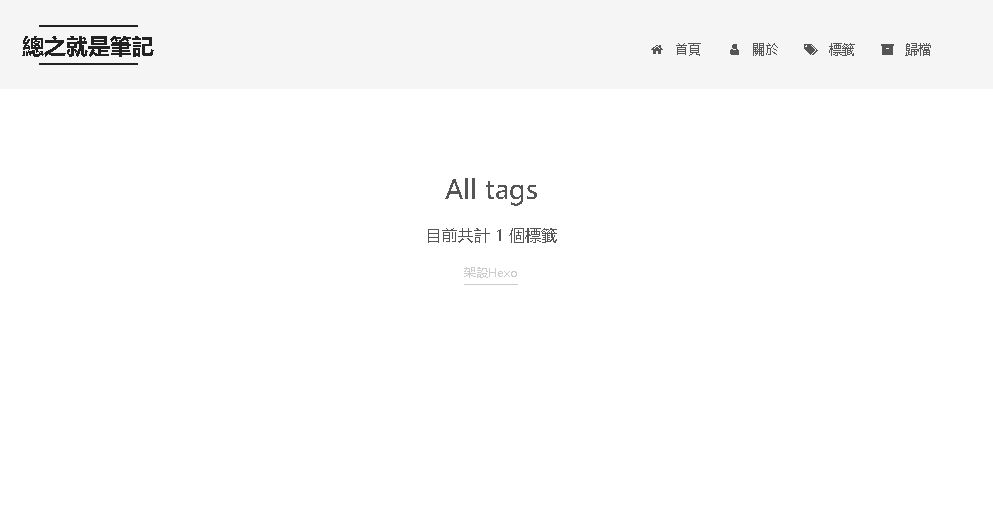
另外，如果有想要刪除之前的tag先用以下指令清除hexo。
1 | hexo clean |
再重新登一次hexo server。
1 | hexo s |
將Hexo發佈到Github
終於到了最後一步，讓自己的網站能夠被大家看到。
部屬的方式有很多，但筆者目前只會用Github部屬，所以就先這個方法部屬網站。
首先，你要先有GitHub的網站帳號。
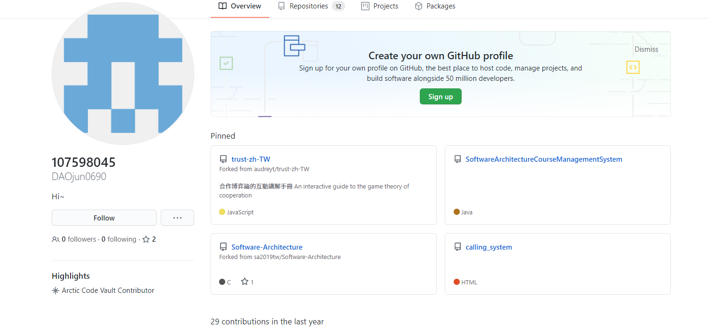
然後建立一個Github專案，名稱為<username>.github.io。例如說我的名字叫做DAOjun0690，那我就創建一個DAOjun0690.github.io的專案(username這裡一定要打的跟自己的文字一樣，不然會出事網站會部屬失敗)。
再來安裝Git套件:
1 | npm add hexo-deployer-git |
修改網站設定_config.yml，找到deploy之後進行以下修改:
1 | deploy: |
yourAccount是你的Github帳號，repo是你剛新建專案的網址(下面那張圖框起來的地方)，branch則是指定分枝，通常是master。
接著用hexo d或hexo deploy部署到Github Pages
1 | hexo deploy |
接下來在瀏覽器輸入
更新Github
之後有更新文章輸入以下指令，注意如果只輸入hexo d文章是不會更新的喔。(更新之後要等大約3分鐘才會在網站看到)。
1 | hexo clean && hexo generate && hexo d |